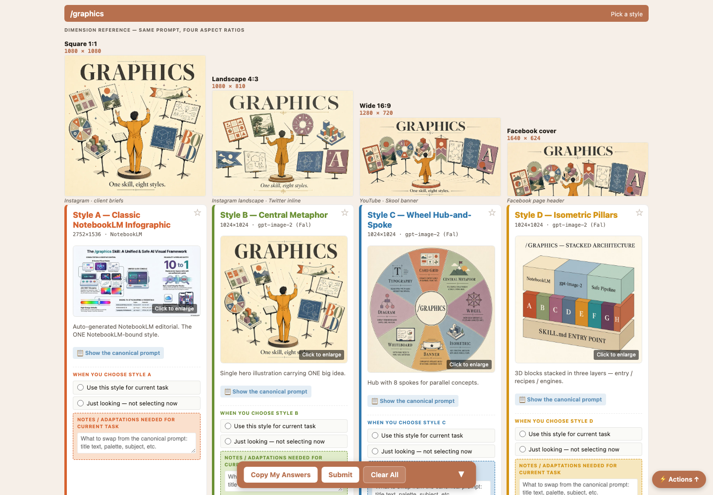

Eight Styles, A Through H.
Classic infographic, central metaphor, hub-and-spoke wheel, isometric pillars, course banner, whiteboard explainer, technical diagram, typography image. Each with its own recipe.
Inside The IncredAgents Mod Pack
Every visual asset — infographics, banners, diagrams, logos, mockups, posters — enters through one door. Eight curated styles shown as real examples you point at, an ask-first discipline before anything generates, and a pipeline with safety guarantees built in.

The picker
When /graphics fires, the first thing that opens is the example brief — every style rendered as a real generated image. You point at the one you want. No describing 'modern but playful' into the void.
Classic infographic, central metaphor, hub-and-spoke wheel, isometric pillars, course banner, whiteboard explainer, technical diagram, typography image. Each with its own recipe.
Square, landscape, wide, social cover — the same prompt shown across aspect ratios before you commit.
Describe the image without picking and it proposes a style — then asks. Nothing generates until you've seen the plan.
The consolidation
This skill replaced an entire drawer of one-off image skills — infographic, visual-assets, image-pipeline, diagram, banner, and more. Every prompt template, parameter, and safety guarantee moved inside, so there's exactly one place to get it right.
Each style carries its canonical recipe — see it, adapt it, know exactly what will be asked of the engine.
A pre-flight check runs at invocation — missing keys get named, and a direct-API fallback exists when the tool wrapper drops the ball.
Ask for an image, get an image. It never hands you an HTML mockup or a description and calls it done.
Get started
Ships in the mod pack with all eight style recipes included.
$ git clone https://github.com/MyAiFreedomSystems/incredagents.git
$ cd incredagents
$ python3 onboard.py
One installer wires in the whole mod pack and asks only for the keys each skill needs.
The next asset starts with examples, not adjectives.
Get Graphics On GitHub →